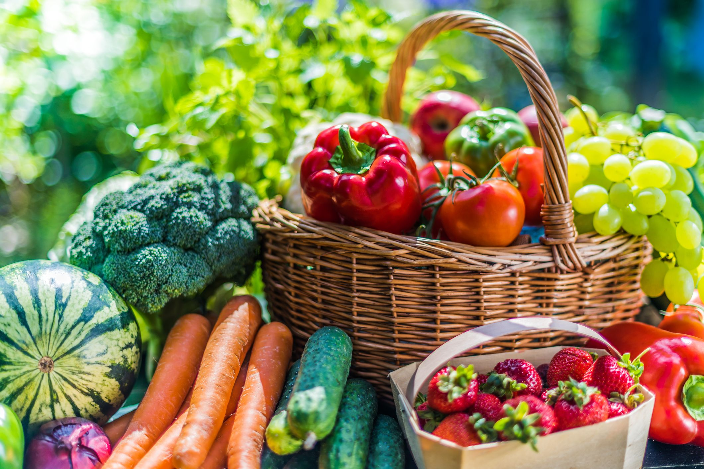

Nuestros Beneficios
Comprar directamente a nuestros agricultores trae grandes ventajas para todos. Cuando eliges nuestros productos, estas apoyando al comercio local y llevando alimentos mas saludables a tu familia.

¿Por que elegirnos?
- Frescura: Cosechamos y enviamos el mismo dia para mantener el sabor natural.
- Precios justos: Al eliminar los intermediarios, el productor gana mas y el consumidor tiene precios mas justos.
- Sostenibilidad: Apoyamos practicas agricolas responsables con el medio ambiente.